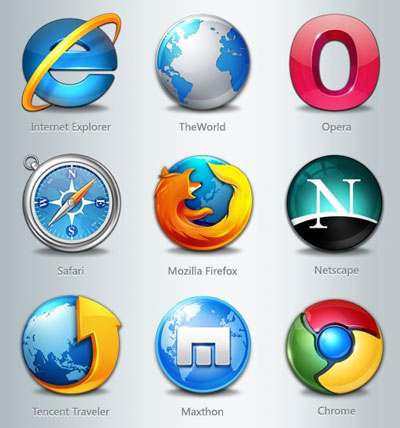

A web server is computer software and underlying hardware that accepts requests via HTTP (the network protocol created to distribute web content) or its secure variant HTTPS. A user agent, commonly a web browser or web crawler, initiates communication by making a request for a web page or other resource using HTTP, and the server responds with the content of that resource or an error message. A web server can also accept and store resources sent from the user agent if configured to do so.
A web browser, often shortened to browser, is an application for accessing websites. When a user requests a web page from a particular website, the browser retrieves its files from a web server and then displays the page on the user's screen. Browsers can also display content stored locally on the user's device.
